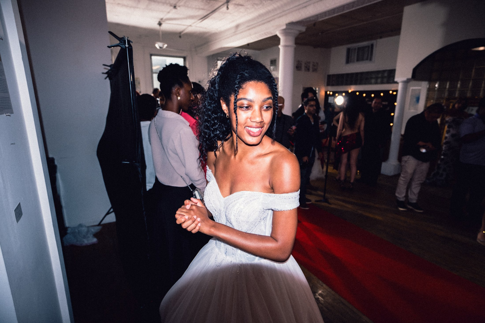

Fashion event photography / rooftop portraits / New York
Flash in
the room.
A fashion-forward event story built around direct light, strong styling, and the people who make a launch feel like a scene.




Case study / Editorial eventsSony Focus Show / NYC
Fashion event photography / rooftop portraits / New York
A fashion-forward event story built around direct light, strong styling, and the people who make a launch feel like a scene.
